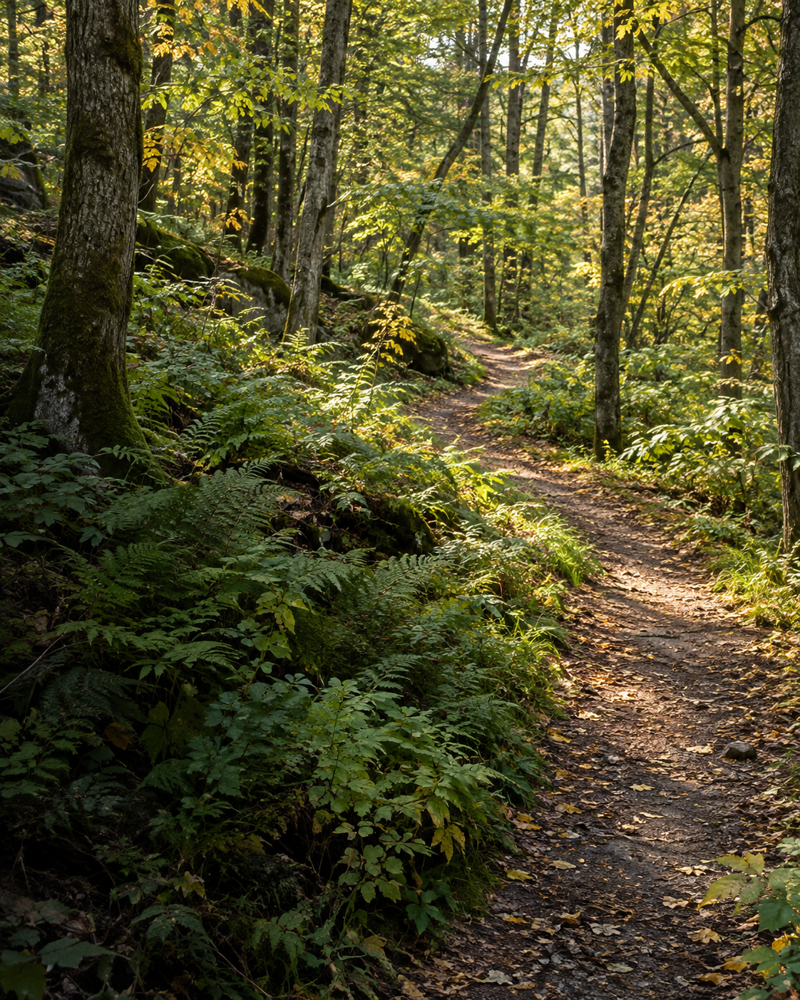

Make room
for outside.
Turn park notes into a pocket guide.
Choose your excerpts. Take a page with you.
A recorded Gemma example. No setup needed.

Theodore
Roosevelt Island
Birders will find habitat for wading birds, raptors, and warblers.
Made to leave the browser behind.
A few notes.
A way out the door.
Keep the useful details close, with room to notice something new.
- 1
Bring the source
Start with park information or your own notes. Keep the original wording and qualifications.
- 2
Make it yours
Check what Gemma chose and what it left out. Add a line, move an excerpt, leave out the rest.
- 3
Take it outside
Save a page that opens offline, or print a guide with space for what you notice.
Your field guide
Start with the source.
Where will you go? Start with notes you have permission to use.
Checking local model availability…
Use Gemma with your own notes
Install Ollama and Node.js 22 or later. From the source repository:
ollama pull gemma4:12b-it-q4_K_M
npm startStart Ollama, then open http://127.0.0.1:4318. The model download is about 8 GB; memory needs and speed depend on your computer.
The public example is a recorded response. Fresh selections run on your computer, through the local Node server and Ollama.
Keep what helps. Check what is missing.
Every source line is below. Review unchecked lines too: an exact quote can still leave something important out.
A page to take with you.
Your selection is ready. Save a copy before leaving.
Your pocket guide
Nothing selected yetFold along the dashed lines. Unfold to read.
Your notes stay in memory until you save them.
No accounts. No location access. No analytics.